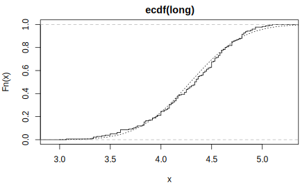

第 2 章 基础图形
数据可视化是一种重要的数据分析手段，Claus O. Wilke 目前正在写《Fundamentals of Data Visualization》，并且给出了在线网络版5。
1996年R语言横空出世 (Ihaka and Gentleman 1996) 带数学符号的注释 (Murrell and Ihaka 2000)
结合统计意义和探索性数据分析介绍各种常见统计图形
plot 函数对象
图 2.1: plot函数对象
在介绍各种统计图形之前，先介绍几个绘图函数 plot 和 text 还有 par 参数设置， 作为最简单的开始， 尽量依次介绍其中的每个参数的含义并附上图形对比。
x <- 1:4
y <- x
plot(x, y, ann = F, col = "blue", pch = 16)
text(x, y,
labels = c("1st", "2nd", "3rd", "4th"),
col = "red", pos = c(3, 4, 4, 1), offset = 0.6
)其中 labels， pos 都是向量化的参数
2.1 散点图
散点图（点图），抖动图（箱线图），一维的二维的
高亮某些点，按类别绘散点图6
data("iris")
pch <- rep(16, length(iris$Petal.Length))
pch[which(iris$Petal.Length < 1.4)] <- 17
stripchart(Petal.Length ~ Species,
data = iris,
vertical = TRUE, method = "jitter",
pch = pch
)图 2.2: 错误的散点图画法
pch 没有向量化 实际只是取了前三个值 16 16 17 对应于 Species 的三类
高亮某些点 关键是高亮的分界点是由区分意义的
data("iris")
stripchart(Petal.Length ~ Species,
data = iris, subset = Petal.Length > 1.4,
vertical = TRUE, method = "jitter", ylim = c(1, 7),
pch = 16
)
stripchart(Petal.Length ~ Species,
data = iris, subset = Petal.Length < 1.4,
vertical = TRUE, method = "jitter", add = TRUE,
pch = 17
)图 2.3: 正确的散点图
2.2 折线图
应用：时序图
2.3 条形图
条形图
图 2.4: 条形图
应用： 自协方差、自相关、偏自相关、协相关和协方差图，
2.4 直方图
2.5 经验累积分布图
with(data = faithful, {
long <- eruptions[eruptions > 3]
plot(ecdf(long), do.points = FALSE, verticals = TRUE)
x <- seq(3, 5.4, 0.01)
lines(x, pnorm(x, mean = mean(long), sd = sqrt(var(long))), lty = 3)
})
2.6 QQ 正态分布图
2.7 箱线图
A <- c(79.98, 80.04, 80.02, 80.04, 80.03, 80.03, 80.04, 79.97,
80.05, 80.03, 80.02, 80, 80.02)
B <- c(80.02, 79.94, 79.98, 79.97, 79.97, 80.03, 79.95, 79.97)
boxplot(A, B)with(data = iris, {
op <- par(mfrow = c(2, 2), mar = c(4, 4, 2, .5))
plot(Sepal.Length ~ Species)
plot(Sepal.Width ~ Species)
plot(Petal.Length ~ Species)
plot(Petal.Width ~ Species)
par(op)
mtext("Edgar Anderson's Iris Data", side = 3, line = 4)
})图 2.5: 安德森的鸢尾花数据
2.8 等高线图
contour
2.9 透视图
persp 多元分布函数图像
2.10 热图
image
应用：heatmap, raster 图像
2.11 树图
dendrogram
层次聚类/分类/回归树
2.12 图形参数
par() 图形版面设置
2.13 数学注释
数学符号注释，图2.6 自定义坐标轴 (Murrell and Ihaka 2000)。
# 自定义坐标轴
plot(c(1, 1e6), c(-pi, pi), type = "n",
axes = FALSE, ann = FALSE, log = "x")
axis(1, at = c(1, 1e2, 1e4, 1e6),
labels = expression(1, 10^2, 10^4, 10^6))
axis(2, at = c(-pi, -pi / 2, 0, pi / 2, pi),
labels = expression(-pi, -pi / 2, 0, pi / 2, pi))
text(1e3, 0, expression(italic("Customized Axes")))
box()图 2.6: Creating Customized Axes With Suitable Annotation
2.14 旋转坐标抽标签
旋转坐标抽标签的例子来自手册《R FAQ》的第7章第27个问题 (Hornik 2017)，在基础图形中，旋转坐标轴标签需要 text() 而不是 mtext()，因为后者不支持par("srt")
## Increase bottom margin to make room for rotated labels
par(mar = c(5, 4, .5, 2) + 0.1)
## Create plot with no x axis and no x axis label
plot(1 : 8, xaxt = "n", xlab = "")
## Set up x axis with tick marks alone
axis(1, labels = FALSE)
## Create some text labels
labels <- paste("Label", 1:8, sep = " ")
## Plot x axis labels at default tick marks
text(1:8, par("usr")[3] - 0.5, srt = 45, adj = 1,
labels = labels, xpd = TRUE)
## Plot x axis label at line 6 (of 7)
mtext(side = 1, text = "X Axis Label", line = 4)图 2.7: 旋转坐标轴标签
srt = 45 表示文本旋转角度， xpd = TRUE 允许文本越出绘图区域，adj = 1 to place the right end of text at the tick marks；You can adjust the value of the 0.5 offset as required to move the axis labels up or down relative to the x axis.
2.15 双纵轴
How to plot multiple time series plots in a grid, where each plot has two y axes? https://stackoverflow.com/questions/52082801
library(ggplot2)
dd <- data.frame(
x = 1:11, y = c(rnorm(22),rpois(22,5)),
id = gl(2, 11, labels = paste0("ser", 1:2)),
panel = gl(2, 22, labels = c("norm","pois"))
)
# 设置左手刻度为 norm 右手刻度为 pois
ggplot(dd, aes(x, y, col = panel)) +
geom_line() +
facet_wrap(~id) +
scale_y_continuous(sec.axis = sec_axis(~.))图 2.8: 双纵轴时间序列
参考文献
Ihaka, Ross, and Robert Gentleman. 1996. “R: A Language for Data Analysis and Graphics.” Journal of Computational and Graphical Statistics 5 (3): 299–314.
Murrell, Paul, and Ross Ihaka. 2000. “An Approach to Providing Mathematical Annotation in Plots.” Journal of Computational and Graphical Statistics 9 (3): 582–99.
Hornik, Kurt. 2017. “R FAQ.” https://CRAN.R-project.org/doc/FAQ/R-FAQ.html.